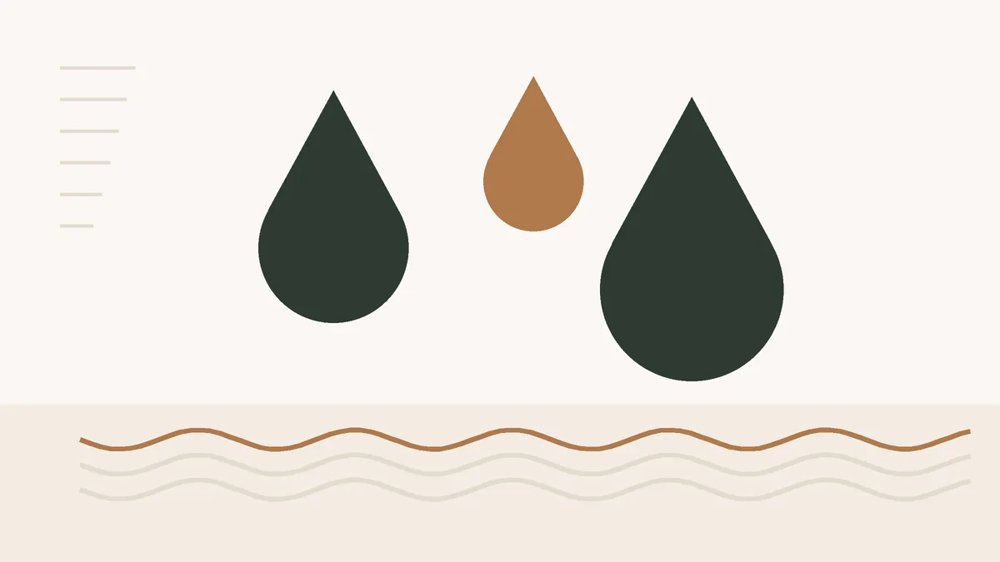

Piernas hinchadas con el calor húmedo de Barcelona: drenaje linfático, presoterapia y sus límites
Con el calor húmedo de julio a septiembre, mucha gente nota las piernas pesadas y los tobillos marcados por el calcetín al llegar a casa. Es de las consultas más frecuentes de final de verano, y la respuesta no siempre es reservar sesiones.
· 7 min de lectura · Centro Estética Barcelona

El drenaje linfático manual y la presoterapia alivian la sensación de pesadez y la hinchazón leve por calor o por pasar muchas horas de pie o sentada. No curan problemas de circulación ni sustituyen la valoración médica cuando la hinchazón tiene otra causa. Con eso claro, vamos por partes.
Por qué se hinchan más las piernas en verano
Con calor, los vasos sanguíneos se dilatan para que el cuerpo pierda temperatura. Eso favorece que se acumule líquido en la parte baja de las piernas, sobre todo si pasas muchas horas quieta. En Barcelona se suma la humedad, que hace que sudar enfríe peor, y las noches en que cuesta descansar con las piernas en alto.
Es típico que por la mañana estén bien y a última hora de la tarde se note el tobillo marcado. Esa hinchazón que va y viene con el día, en las dos piernas por igual, es la que suele responder a medidas sencillas y a un drenaje.
Drenaje manual o presoterapia: en qué se diferencian
| Criterio | Drenaje linfático manual | Presoterapia |
|---|---|---|
| Cómo se hace | Con las manos, maniobras muy suaves y lentas | Botas que se inflan por compartimentos, de pie a muslo |
| Sensación | Relajante, casi sin presión | Compresión rítmica, se nota apretar |
| Ventaja | Se adapta a zonas sensibles y a cada pierna | Constante y cómoda, se suma a otro tratamiento |
| Precio orientativo | 50 € la sesión de 60 min | Desde 25 € añadida a otra técnica |
En la práctica los combinamos a menudo: drenaje manual en las zonas donde más se acumula y presoterapia al final. Si solo buscas aliviar piernas cansadas después del trabajo, un drenaje de piernas sin más ya se nota. Tienes la explicación de cada técnica en masajes y drenaje y en tratamientos corporales.
Antes de reservar: hinchazones que tiene que ver un médico
Esta parte es la importante. Hay hinchazones que no son de calor y en las que un masaje o la presoterapia pueden estar contraindicados. Consulta primero con tu médico si te pasa alguna de estas cosas:
- Se hincha solo una pierna, sobre todo si además duele, está caliente o enrojecida. Si es brusco, no esperes a la cita: acude a urgencias.
- La hinchazón no baja después de una noche de descanso, o va a más semana a semana.
- Te falta el aire al caminar o al tumbarte, o tienes problemas de corazón o de riñón conocidos.
- Tienes antecedentes de trombosis, estás en tratamiento oncológico o te han operado hace poco.
- Estás embarazada: la presoterapia no la hacemos, y cualquier drenaje necesita el visto bueno de tu ginecólogo.
- Hay heridas, infección o eccema en la zona.
En la primera sesión te preguntamos por todo esto y lo anotamos en la ficha. Si algo no encaja, no hacemos la sesión y te recomendamos que lo consultes. Es preferible a la alternativa.
Qué puedes esperar de una sesión
Lo más habitual es salir con las piernas ligeras y ganas de ir al baño en las horas siguientes. El efecto sobre la hinchazón por calor dura unos días, más si lo acompañas de lo que contamos abajo. Por eso, en esta situación, no solemos proponer bonos largos: una sesión cuando más aprieta el calor, o una cada una o dos semanas durante el verano, suele bastar.
Si además buscas mejorar retención de líquidos asociada a celulitis, eso ya es otro objetivo y otro plan, normalmente con maderoterapia. No lo mezcles con las piernas cansadas de verano al hacer cuentas.
Dos situaciones que vemos mucho en septiembre
Quien trabaja de pie. Dependientas, personal de hostelería de la temporada de verano, peluqueras. Llegan con las piernas cargadas después de meses de turnos largos y calor. Aquí el drenaje manual de piernas funciona bien como alivio, y lo que más cambia el día a día es el calzado cómodo y moverse durante el turno en lugar de estar parada en el mismo punto.
Quien vuelve de un viaje largo. Horas de avión o de coche sentada, con calor en destino. La hinchazón de tobillos tras un vuelo suele bajar en uno o dos días caminando. Si no baja, si es de una sola pierna o si duele la pantorrilla, no es para un drenaje: es para el médico, y cuanto antes.
Lo que funciona sin pisar el centro
- Caminar. La musculatura de la pantorrilla es la mejor bomba que tienes. Media hora al día hace más que cualquier crema.
- Piernas en alto diez o quince minutos al llegar a casa, con los pies por encima del corazón.
- Agua fresca al final de la ducha, de tobillos hacia arriba.
- Evitar el calor directo: sesiones largas de sol en la arena, depilación con cera caliente en plena ola de calor o baños muy calientes.
- Moverse en el trabajo. Si estás sentada, mover los tobillos en círculos cada rato; si estás de pie, cambiar el peso de pierna y dar unos pasos.
Y una última cosa que vemos a menudo: mucha gente bebe menos agua cuando nota las piernas hinchadas, pensando que retiene más. No funciona así. Bebe con normalidad.
Pedir cita
¿Lo vemos en tu caso?
La valoración es gratuita. Te decimos qué tiene sentido hacer, qué no y cuánto costaría, sin compromiso.
Publicado el · Contenido revisado por Jeisy, responsable de Centro Estética Barcelona. Información general: no sustituye la consulta con un profesional sanitario.